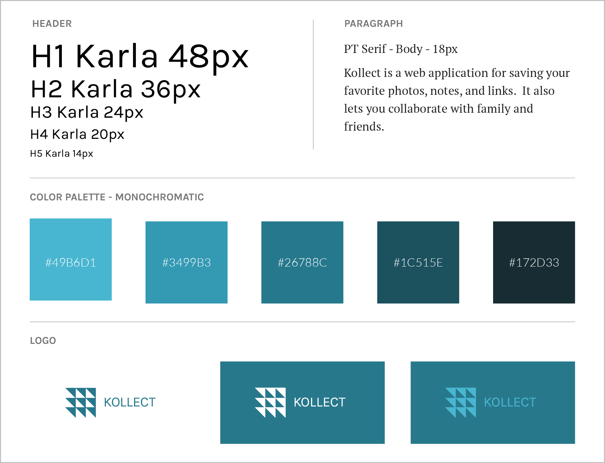
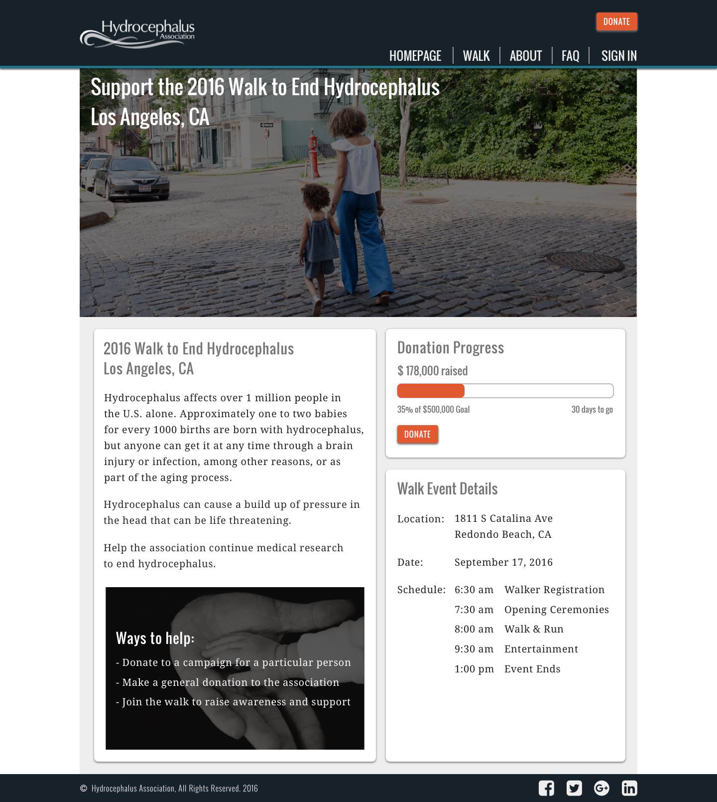
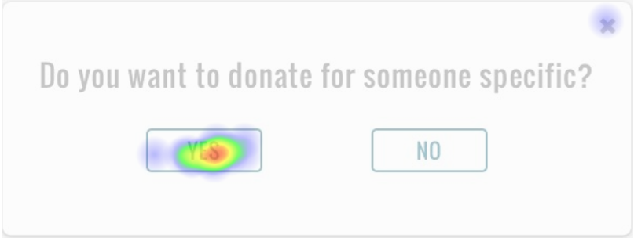
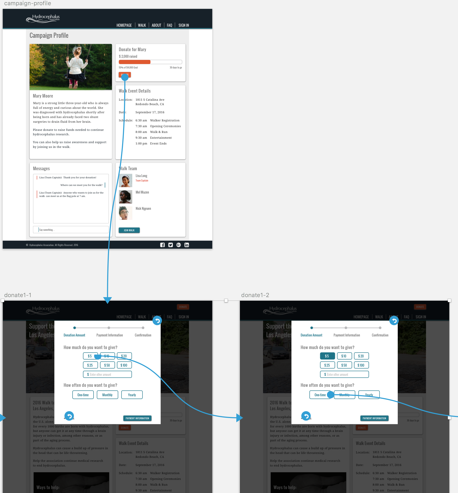

Kollect
Kollect
UX Research & Design: simple user onboarding and content management
UX Research and Design - Neil Ranada
Project time - 3 months
Project location - San Diego, CA
Summary
Kollect was a study on a web application for easily managing notes, images, and links. I explored solutions for people's frustrations to organizing things that matter to them.
For example, sometimes people forget where they saved a great meme they wanted to share with family and friends.

Source: Pinterest
Or sometimes, people scramble to find notes they diligently took the other day.
Source: Me.me
People struggle to remember where they save things. Was it on a post-it? In your notebook? Note app on your phone? Note app on your laptop?!

Source: Quickmeme
The goal was to create a website design for organizing content while also fulfilling the business requirements set out for this design study.
Problem
People have a difficult time remembering where they save notes, images, and links.
Solution
A web application where people can save content all in one place and access it anywhere.
Research
I started my research with a survey posted online to various social media platforms and public forums. I needed to get a feel for what problems may exist, if any. I asked questions focused on people’s past behaviors for saving and organizing items.
Here are my key findings from 31 responses:
- Over half said that when they find an interesting image or link online, they save it
- When asked how they save content: 51.5% use a browser bookmark while 42.4% download it
- The top three tools for bookmarking were: browser (70.6%), Pinterest (35.5%), and Facebook (32.4%)

Specific tools or sites used for bookmarking
When asked what they liked MOST about tools for saving items, some said:
- “Saving it in the browser is quick and easy. Saving it in Google Keep allows me to be more organized than just bookmarking in the browser.”
- “Streamlined design, everything needed is on your screen, functions without fault.”
- “Screenshots I save in a photo album on my smartphone, bookmarks will take you directly to what you want to pull up at another time.”
When asked what they liked LEAST about tools for saving items, some said:
- “Sometimes I can’t find what I saved.”
- “Browsers just show title and no preview for what is on the site. It would save time from having to open different links if you could preview it in when you mouse over the link.”
- “I bookmark too many things, and they are hard to organize, or I forget about them.”
When asked about their note taking behaviors:
- 50% wrote notes often, 41.2% wrote notes sometimes, while 8.8% never wrote notes
Notetaking behavior
When asked what applications they used to write and keep notes:
- 75.8% used smartphones
- Other tools were noted as widely used: Other (33.3%), Evernote (15.2%), Microsoft Word (18.2%), Desktop applications (15.2%), and None (9.1%)
What some said they liked MOST about note taking tools they used:
- “Syncs to my cloud.”
- “I like the notes option on my iPhone the best because it’s easy to access, save and delete.”
- "Google Keep – can add as many notes as needed, can check things off your list, can color code, can access from home or phone, easy to stay organized."
What some said the like LEAST about note taking tools they used:
- “Some require Internet connection.”
- “Sometimes I forget my planner.”
- “Too much trouble to search for particular notes.”
Other findings:
- 76.2% said they work in a collaborative environment
- Over half said they share resources (files, images, links, etc.) with their co-workers
- 76.9% used Facebook or Twitter to sign up for an account on other websites because "it's quick and easy."
Why people use social accounts for signing up for other websites
What I learned from survey results
Most people save images and links by either downloading them or using a browser bookmark. With regards to notes, most people use a phone app. They say that the tools they user are simple, user-friendly, and intuitive.
However, despite the ease of saving items, people complained that their files eventually become disorganized and difficult to find and sort later.
Finding an opportunity to solve a problem
I began with an assumption: people need a website that allows them to easily save, share, and collaborate with content from any device. To validate this assumption, I needed to answer three questions:
- Do people need a single point for saving, sharing, and collaborating on content?
- Who is experiencing frustration?
- What do they need to improve their content management experience?
User Personas
I identified three people to interview and used them as models to create the User Personas. I focused on learning about their past experiences with saving and organizing things that interest them most.
Stephen is the primary persona and the focus for the design. Out of the three personas, meeting his goals and addressing his frustrations would also address the needs of the secondary and tertiary personas.

Open PDF file for User Personas in another tabopen_in_new
The User Personas have different interests for managing content: fitness, photography, and business. However, they share three common goals:
- Centralized way of organizing content.
- Easily save notes, images, and links.
- Ability to easily share content with a community.
I used these three goals as the focus for my design decisions.
Competitive Analysis
I needed to learn from the donation patterns of more popular web applications. I identified three: Evernote, Google Keep, and Ember.
I created matrixes such as the one below to assess the strengths, weaknesses, opportunities, and threats of each website (SWOT analysis).


View analysis matrixes for other apps in another tabopen_in_new
Top three strengths to include in the design:
- Allow people to quickly add content such as notes, images, and links.
- Provide a shallow learning curve.
- Content synced across devices so they can be accessed anywhere.
Top three weaknesses to avoid in the design:
- Having too many features that overwhelm people.
- Being too restrictive on how people share items.
- Not intuitive to use.
Meeting research goals
- Do people need a single point for saving, sharing, and collaborating on content?
Yes. - Who is experiencing frustration?
People who want to add and organize content like the three user personas. - What do they need to improve their customer checkout experience?
A single place where they can easily add, organize, and share notes, images, and links. They also must be able to access it from any device.
Design
After conducting user research and defining the problem, I was ready to move forward and create design solutions.
User Stories
I created a spreadsheet with a list of tasks to meet the goals of the user personas.
"As a __________, I want to __________ so that I can __________."
New User:

Returning User:
Open Google Sheets for User Stories in another tabopen_in_new
User Flows
I created User Flows to visually depict how people completed each task set out in the User Stories.
Onboarding Flow
Dashboard Flow
Open Draw.io for User Flows in another tabopen_in_new
Low-Fidelity Wireframes
I created low-fidelity wireframes through Balsamiq.com to focus on the functionality of the web app.


I describe how I refined the search and customer checkout flows under the Testing section.
Visual Design
I began by brainstorming some brand names and logo designs. I looked to well-known brands that I admire, such as Uniqlo, for inspiration. They use carefully selected typography and simple logos that are scalable to small sizes but still recognizable.
Initially the brand name was Blocbox and went through a number names and logo ideas.
I eventually settled on the name Kollect. It was a slight spin on the word "collect," which is what people are doing when they use this app. For the logo, I applied gestalt-ism with a group of small triangles to form a simple, clean, modern looking box that scales well to small sizes.
Typography
I used PT Serif for the body text and complemented it with Karla, a san serif typeface similar in structure to PT Serif, but with a softer style meant to draw the eyes to headers and buttons.
Style Guide
Lastly, I worked on color to finalize the style guide. I chose a light blue to give the app a light fresh feel. I used the Adobe wheel to build a monochromatic palette.
Open Style Guide in another tabopen_in_new
Mockups
With the style guide, I used Sketch app to create high fidelity mockups to give the website a look and feel consistent with the main website. I also used color contrast to reinforce the functions for each page involved in the donation process.


Testing
I tested early and often during every phase of the design process: wireframes, mockups, and prototype. I took every opportunity to test in person or remotely online to refine my design solutions.
Low-Fidelity Tests
I tested wireframes using click tests and navigation tests posted on UsabilityHub.com.
The first User Story I needed to solve for was:
“As a donor…I want to search the name of a person with hydrocephalus…so that I can view their fundraising campaign.”
The first version of the layout showed that 62.5% successfully click the “Donate” button. However, 37.5% were distracted by either the “Sign In” button or the content in the Walk section:

Homepage layout

Campaign search modal
Open Usability Hub test results in another tabopen_in_new
With these results, I knew that I needed to minimize distractions from getting people to donate. As you will see later in the high-fidelity mockup, I tucked the “Sign In” button away in the navigation menu. I also made the Walk section look less prominent relative to the Donation section while eliminating the “Join Walk” button.
The next part of this flow was the customer checkout process which covers the User Story:
“As a donor, I want to donate to a hydrocephalus person’s campaign so that I can support medical research.”
The layout for the customer checkout was successful with an 81% completion rate on the campaign profile page and 100% completion rate on the modals that followed:

Campaign profile for person with hydrocephalus

Payment Amount modal

Payment Information modal

Payment Confirmation modal
Open Usability Hub test results in another tabopen_in_new
High-Fidelity Tests
Again, I tested people’s ability to search for a campaign to solve for the User Story:
“As a donor…I want to search the name of a person with hydrocephalus…so that I can view their fundraising campaign.”
I saw high success rates while testing high-fidelity mockups which was carried over from the success of the wireframes during the low-fidelity tests:

Homepage with high success rate of testers initiating the search process
Modal asking testers if they want to donate for someone specific

Modal that lets testers search and select a campaign

Campaign search modal with field filled with test scenario girl's name, Mary

Testers successfully donating to the campaign dedicated to a girl named Mary
Open Usability Hub test results in another tabopen_in_new
Next, I tested the customer checkout process to solve for the User Story:
“As a donor, I want to donate to a hydrocephalus person’s campaign so that I can support medical research.”

Testers successfully starting the donation process

Testers were asked to make a $5 one-time donation

Continuing to complete the Payment Amount modal

Completing the Payment Amount modal and moving on to Payment Information

Testers thought the prototype was a real website, skipped filling out the form, and clicked the "Payment Confirmation" button

Completing Payment Information modal and moving on to Payment Confirmation

Payment Confirmation modal with open ended options to see what testers wanted to do next
Open Usability Hub test results in another tabopen_in_new
Success rates for completing each step was greater than 90%. The exception was 40% success rate for the payment information step. Testers said they didn't go through the motions of filling out the form because they didn’t think it was required. They jumped ahead and clicked the “Payment Confirmation” button. I chalked it up to a test-ism and deemed the results an overall success.
Usability Testing
I conducted four usability tests by posting the InVision prototype on UserTesting.com. I came up with three test objectives:
- Can people search for a particular donation campaign?
- Can people easily donate?
- Are people satisfied with the donation process?
I gave testers the scenario and tasks below. As I received feedback from each test, I refined the scenario and tasks to align them with the test objectives better.
Scenario: Your friend created a fundraiser. She is trying to get donations for medical research for her daughter Mary and others like her.
Tasks:
- Take a minute to look at the homepage. What do you think this website is about?
- Donate to the fundraising campaign for a little girl named Mary. Give a $5 one-time donation. (your real information is not required for filling out forms)
- How do you feel about the smoothness of the checkout process? Do you feel the checkout process was trustworthy?
Usability Test #1 Results
- Felt the website design was trustworthy in general
- It took a few seconds to discover clicking the “Donate” button would lead him down the path of finding a fundraising campaign for a particular person
- Completed the checkout process with ease
- “Clean looking design of a website…the biggest thing was donating. It was painless to look for the character Mary and donate to her.”
Press play above or watch video in another tabopen_in_new
Usability Test #2 Results
- Unsure of how legitimate the homepage looks
- “If you’re having a walk on a website, you want to make sure there’s information about the organization itself…I’d want to make sure they're focusing on the kind of credibility and making sure their money is going to the right place.”
- Easily searched and found fundraising campaign for the little girl in the scenario
- Expected to be able to donate to the little girl immediately after the search results and not be redirected to another page asking the tester to donate again
- Easily completed the checkout process with no issues
Press play above or watch video in another tabopen_in_new
Usability Test #3 Results
- Did not use the search bar to find the campaign for the little girl in the scenario - opted to click around and browse
- Initially tried to select the campaign for a different girl but eventually found the right one
- Quickly completed the checkout process
- “I think this is pretty smooth and also it’s very trustworthy...”
Press play above or watch video in another tabopen_in_new
Usability Test #4 Results
- No issues searching and selecting the fundraising campaign for the little girl in the scenario
- Easily navigated the customer checkout modal and at one point jumped back a step to check that one of the form fields was used to enter CVC
- “Generally, if a website is not accepting PayPal I don’t really consider it trustworthy…I exclusively go through PayPal because it adds another layer of protection.”
- “…the payment process was extremely smooth. I didn’t have to go through any unnecessary steps.”
- Said he had no issues on the smoothness of the payment process
- Mentioned the process might be too simplistic “which is good...but also kind of psychologically, when looking into putting actual money it might be nice to have a little bit extra there to give people some confidence…”
Press play above or watch video in another tabopen_in_new
Going back to answering the test objects:
- Can people search for a particular donation campaign?
Yes, once clicking the “Donate” button testers were able to search and select the campaign specifically for the girl in the scenario. - Can people easily donate?
Yes, all testers were able to complete the customer checkout process smoothly. - Are people satisfied with the donation process?
In general, testers were pleased with how easy it was to donate. However, one tester mentioned that he preferred to use PayPal because he felt it added an extra layer of security. Based on this feedback, I added PayPal as a payment option.
Prototype
Open Prototype and try out the usability tasks in the section above.open_in_new
I used InVision to create a prototype with mockups imported from Sketch app. You can open it in another tab and try the scenario and tasks found in the Usability Testing section above.
Conclusion
I was able to create a streamlined checkout process for people to donate to a particular campaign.
What surprised me the most was the varying views on how trustworthy the website looked overall. The trustworthiness of a website is always worth improving.
If given more time, I would have liked the opportunity to work with the business, design, and development teams of the Hydrocephalus Association website. I focused my study on the customer checkout process for making donations. However, there are many other aspects of the existing website that one could examine under the lens of User Experience design such as: joining a Walk Team, individual campaign drives of walkers, incentive prizes, and much more.
The Hydrocephalus Association is doing incredible research to end hydrocephalus. You can learn more at the main Hydrocephalus Association website.
You also donate and find a walk event in a city near you through the Walk Schedule.